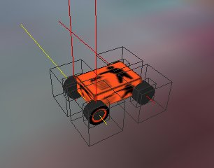
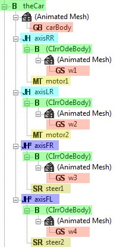

Part 1 - the framework
In this section I will show the helper classes that make the whole program work in first place, the state machine, the main menu and the projectile class that enables the tank, the helicopter and the plane to shoot something.
Part 1.1 - the main loop
First of all we will check out the main loop of the program. This loop is running until the program quits, it is also the state machine of the demo that is responsible to initialize the states and switch between them, if necessary.
First of all we include the necessary include files and tell the compiler which namespaces to use
#include <irrlicht.h> #include <IrrODE.h> #include "CCar.h" #include "CTank.h" #include "CMenu.h" #include "CHeli.h" #include "CPlane.h" #include "CState.h" using namespace irr; using namespace core; using namespace scene; using namespace video; using namespace io; using namespace gui;
The next part is the beginning of the main loop. First of all we do the "normal" Irrlicht initialization stuff.
int main(int argc, char** argv) {
IrrlichtDevice *device=createDevice(EDT_DIRECT3D9,
dimension2d(640,480),
16,false,false,false,0);
device->setWindowCaption(L"IrrODE car demo");
IVideoDriver *driver = device->getVideoDriver();
ISceneManager *smgr = device->getSceneManager();
IGUIEnvironment *guienv = device->getGUIEnvironment();
dimension2d cSize=driver->getScreenSize();
Now we do some IrrODE specific initialization. First we register the IrrOde scene node factory so that we can load the scene file with a lot of IrrOde scene nodes later on, we initialize ODE and set the Irrlicht timer object in IrrOde.
//register the IrrOde scene node factory CIrrOdeSceneNodeFactory cFactory(smgr); smgr->registerSceneNodeFactory(&cFactory); //install the ODE CIrrOdeManager::getSharedInstance()->install(device); //init the ODE CIrrOdeManager::getSharedInstance()->initODE();
In the next code part we load our scene, add a camera scene node, modify some textures, make sure the timer is running and finally initialize the physics world
//load the scene
smgr->loadScene("../../data/IrrOdeCar.xml");
//Initialize the camera
vector3df camPos=vector3df(1750,99,2500);
ICameraSceneNode *cam=smgr->addCameraSceneNode();
cam->setPosition(camPos);
//modify the textures of the car segment and the tank segment to
IAnimatedMeshSceneNode *pNode=(IAnimatedMeshSceneNode *)
smgr->getSceneNodeFromName("car_segment");
if (pNode)
pNode->getMaterial(0).getTextureMatrix(0). setTextureScale(50.0f,50.0f);
pNode=(IAnimatedMeshSceneNode *)smgr->getSceneNodeFromName("tank_segment");
if (pNode)
pNode->getMaterial(0).getTextureMatrix(0).setTextureScale(50.0f,50.0f);
int lastFPS=-1;
//phyiscs initialization
CIrrOdeManager::getSharedInstance()->initPhysics();
Now we create all the states of our finite state machine. I'll go into detail a little later on.
//create the necessary state objects CState *pActive=NULL; arrayaStates; CMenu *theMenu =new CMenu (device); aStates.push_back(theMenu ); CCar *theCar =new CCar (device); aStates.push_back(theCar ); CTank *theTank =new CTank (device); aStates.push_back(theTank ); CHeli *theHeli =new CHeli (device); aStates.push_back(theHeli ); CPlane *thePlane=new CPlane(device); aStates.push_back(thePlane);
Now we need to activate the initial state which is the main menu where the user can select his vehicle.
//set the menu state to active pActive=theMenu; pActive->activate();
Next we have the normal Irrlicht way of running the main loop:
while(device->run()) { ... }
Inside the loop we first step the simulation and the active state of our finite state machine. All the stuff needed to control the vehicles is done inside their "update" method (and in IrrOde event handlers as well).
//step the simulation
CIrrOdeManager::getSharedInstance()->step();
//call the update method of the currently active state
u32 iSwitch=pActive->update();
//change the active state if wished,
//i.e. a value other than zero was returned
if (iSwitch) {
iSwitch--;
pActive->deactivate();
pActive=aStates[iSwitch];
pActive->activate();
iSwitch=0;
}
The rest of the main file is just standard Irrlicht-stuff and cleanup after the program was quit.
//now for the normal Irrlicht stuff ...
//begin, draw and end scene and update window caption
driver->beginScene(true, true, SColor(0,200,200,200));
smgr->drawAll();
guienv->drawAll();
driver->endScene();
int fps = driver->getFPS();
if (lastFPS != fps) {
core::stringw str = L"Irrlicht Engine - IrrODE Car Demo [";
str += driver->getName();
str += "] FPS:";
str += fps;
device->setWindowCaption(str.c_str());
lastFPS = fps;
}
}
//drop the world so it is destroyed
device->drop();
//and now some more cleanup...
delete theMenu;
delete theCar;
delete theTank;
delete theHeli;
delete thePlane;
return 0;
This code can be seen in action in the file "source/IrrOdeCar/irrodecar_main.cpp".
Part 1.2 - the state interface
We have already seen the state machine in the main file of the demo. Now we take a look at the interface that all states need to implement. The following code is taken from the file "include/IrrOdeCar/CState.h":
#ifndef _I_STATE
#define _I_STATE
#include <irrlicht.h>
#include <IrrOde.h>
using namespace irr;
using namespace core;
using namespace scene;
using namespace video;
using namespace io;
using namespace gui;
using namespace ode;
/**
* This class is the base class for all states
* that are used in this demo. It has three
* virtual methods that need to be overriden
* by the actual states, activate, deactivate and update.
*/
class CState {
protected:
bool m_bSwitchToMenu, /*!< return to menu state */
m_bHelp; /*!< display the help screen */
IrrlichtDevice *m_pDevice; /*!< the Irrlicht device */
ISceneManager *m_pSmgr; /*!< the current Irrlicht scene manager */
IGUIEnvironment *m_pGuiEnv; /*!< the current Irrlicht GUI environment */
IGUIStaticText *m_pHelp; /*!< the help text */
public:
/**
* The constructor
* @param pDevice the used Irrlicht device
* @param sVehicleName the name of the state (e.g. helicopter)
* @param sHelpFile the help file. The content of
* this file is shown in the help screen
*/
CState(IrrlichtDevice *pDevice, wchar_t *sVehicleName, c8 *sHelpFile);
virtual ~CState() { } /*!< destructor */
/* This method is called on activation of a state */
virtual void activate()=0;
/* This method is called on deactivation of a state */
virtual void deactivate()=0;
/* This method is called once per render frame.
Subclasses should call this method */
virtual u32 update();
/* Irrlicht event handler. Called by subclasses */
virtual bool OnEvent(const SEvent &event);
};
#endif
In the constructor the state base class does simply fill the members (IrrlichtDevice, SceneManager, GUIEnvironment), create a text field for the help text and load this help text:
CState::CState(IrrlichtDevice *pDevice, wchar_t *sVehicleName, c8 *sHelpFile)
{
//initialize the members
m_pDevice=pDevice;
m_pSmgr=m_pDevice->getSceneManager();
m_pGuiEnv=m_pDevice->getGUIEnvironment();
//create the help text
m_pHelp=pDevice->getGUIEnvironment()->addStaticText(L"Help",
rect(5,5,635,475),true);
m_pHelp->setDrawBackground(true);
m_pHelp->setBackgroundColor(SColor(0x80,0xFF,0xFF,0xFF));
m_pHelp->setVisible(false);
//load the text of the help text
char sHelp[10000];
FILE *f=fopen(sHelpFile,"rt");
if (f) {
fread(sHelp,1,10000,f);
fclose(f);
}
else sprintf(sHelp,"Can't open \"%s\".",sHelpFile);
memset(sHelp,10000,0);
stringw sw(sHelp);
m_pHelp->setText(sw.c_str());
//hide the help text and don't switch back to menu ... for now
m_bHelp=false;
m_bSwitchToMenu=false;
}
The second of the three methods that the state base class implements is an Irrlicht event receiver. This receiver is called from the event receivers of the states that derived from this base class. It handles switching back to the main menu and showing the help text.
bool CState::OnEvent(const SEvent &event) {
if (event.EventType==EET_KEY_INPUT_EVENT) {
if (event.KeyInput.PressedDown) {
switch (event.KeyInput.Key) {
//if F1 is pressed the help text should be toggled
case KEY_F1:
m_bHelp=!m_bHelp;
return true;
break;
//if TAB is pressed the program shall return to
//the vehicle selection menu
case KEY_TAB:
m_bSwitchToMenu=!m_bHelp;
return true;
break;
default:
break;
}
}
}
return false;
}
The third and final method should be called from the state's "update" method. It just handles activation and deactivation of the help screen and switching back to the main menu.
u32 CState::update() {
int iRet=0;
//If the menu should be activated we return 1 (index of the menu+1)
if (m_bSwitchToMenu) iRet=1;
//If the help shoudl be shown we deactivate the current state
//and show the help screen...
if (m_bHelp) {
deactivate();
m_pHelp->setVisible(true);
}
else
//...on hiding we activate the current state and hide the help screen
if (m_pHelp->isVisible()) {
m_pHelp->setVisible(false);
activate();
}
return iRet;
}
Part 1.3 - the projectile classes
The classes for managing the projectiles that can be shot or dropped by the tank (cannon), the helicopter (missiles) and
the plane (bombs) we have two classes: on for the projectiles and one to manage them. The classes are defined in
include/IrrOdeCar/CProjecile.h and implemented in source/IrrOdeCar/CProjectile.cpp.
Part 1.3.1 - the projectile
The class for the projectiles, CProjectile, is quite simple:
#ifndef _C_PROJECTILE
#define _C_PROJECTILE
#include <irrlicht.h>
#include <irrOde.h>
class CProjectile {
protected:
irr::ode::CIrrOdeBody *m_pBody;
irr::s32 m_iTtl;
irr::core::vector3df m_vAcc;
irr::ode::CIrrOdeImpulseMotor *m_pMotor;
irr::scene::ISceneManager *m_pSmgr;
public:
/**
* The projectile's constructor
* @param pSmgr the scene manager
* @param vPos the initial position
* @param vRot the initial rotation
* @param vVel the initial velocity
* @param sMesh name of the mesh to use
* @param iTtl the time to live (in ODE steps)
* @param vAcc acceleration vector for missiles
* @param pWorld the ODE world
* @param fScale the scale of the meshscenenode
* @param bFastCollision true for fast moving projectiles
*/
CProjectile(irr::scene::ISceneManager *pSmgr,
irr::core::vector3df vPos,
irr::core::vector3df vRot,
irr::core::vector3df vVel,
const irr::c8 *sMesh,
irr::s32 iTtl,
irr::core::vector3df vAcc,
irr::scene::ISceneNode *pWorld,
irr::f32 fScale,
bool bFastCollision);
irr::ode::CIrrOdeBody *getBody();
irr::s32 getTtl();
void step();
void collide();
};
Here's the constructor:
CProjectile::CProjectile(irr::scene::ISceneManager *pSmgr,
irr::core::vector3df vPos,
irr::core::vector3df vRot,
irr::core::vector3df vVel,
const irr::c8 *sMesh,
irr::s32 iTtl,
irr::core::vector3df vAcc,
irr::scene::ISceneNode *pWorld,
irr::f32 fScale, bool bFastCollision) {
m_iTtl=iTtl;
m_vAcc=vAcc;
m_pSmgr=pSmgr;
m_pBody=reinterpret_cast(
m_pSmgr->addSceneNode(
irr::ode::CIrrOdeSceneNode::nodeNameToC8(
irr::ode::IRR_ODE_BODY_NAME
),
pWorld)
);
irr::scene::IAnimatedMesh *pMesh=m_pSmgr->getMesh(sMesh);
irr::scene::IAnimatedMeshSceneNode *pNode;
pNode=m_pSmgr->addAnimatedMeshSceneNode(pMesh,m_pBody);
pNode->setScale(irr::core::vector3df(fScale,fScale,fScale));
irr::ode::CIrrOdeGeomBox *pBox=reinterpret_cast
(
m_pSmgr->addSceneNode
(
irr::ode::CIrrOdeSceneNode::nodeNameToC8
(
irr::ode::IRR_ODE_GEOM_BOX_NAME
),
pNode
)
);
//...set it's mass and position and init physics.
pBox->setMassTotal(10.0f);
m_pBody->setPosition(vPos);
m_pBody->setRotation(vRot);
m_pBody->initPhysics();
m_pBody->setLinearVelocity(vVel);
m_pBody->setIsFastMoving(bFastCollision);
//if the projectile is accelerated (e.g. a missile) ...
if (vAcc.getLength()>0) {
//... we add a CIrrOdeImpuleMotor to do the acceleration
m_pMotor=new irr::ode::CIrrOdeImpulseMotor(m_pBody,m_pSmgr);
m_pMotor->setMaxPower(vAcc.getLength());
m_pMotor->setPower(1.0f);
m_pMotor->setIsActive(true);
m_pMotor->setForeward(vAcc.normalize());
m_pMotor->initPhysics();
}
//last but not least we add the shot to our list
CProjectileManager::getSharedInstance()->addShot(this);
}
Next up we have two little getter, one to retrieve the body of a projectile and the other one to get the remaining
time to live.
//get the body of the projectile for the follow cam
irr::ode::CIrrOdeBody *CProjectile::getBody() {
return m_pBody;
}
//Get the remaining lifetime of the projectile
//This one is used by the projectilemanager to
//remove a projectile.
irr::s32 CProjectile::getTtl() {
return m_iTtl;
}
Part 2 - the car
In order to edit the world you need to get the free IrrEdit 3d scene editor from ambiera.com,
install it and add the IrrOdEdit plugin and it's resources.
Part 2.1 - modelling the car

The image on top shows the car of the IrrOdeCar demo in IrrEdit. The lines coming out of the objects show the axes of
the joints that build the car. I'll go into detail right away.

This image shows the car's object tree as seen in IrrEdit (without the colors). The colors mark the parts that are IrrOde
tree nodes. The green nodes are bodies (aka "dynamic objects" in ODE). The first object named "theCar" is the
car's body. The four other bodies are the wheels.
The nodes marked red are the geoms that define the shape of the bodies. The "carBody" geom defines the car body's shape
as a box, the geoms "w1" to "w4" define the wheels' geoms to be spheres. Although this might sound strange it
works, and it is the common approach to model wheels in ODE.
The blue nodes are the car's joints, the light blue being of the CIrrOdeHinge for the rear wheels whereas the dark blue are
of type CIrrOdeHinge2 for the front wheels. The normal hinge joint has one axis that is used for the wheel's rotation, the
hinge2 joint has 2 axes, one for the wheel's rotation and one for the steering.
Last but not least we have the yellow nodes. The light ones are the motors, each rear wheel has it's own, and the dark ones are the
servos used for steering the car.
Part 2.1.1 - the wheels
Now let's see the contact parameters. Here's a table with the parameters of the wheels (note that the rear wheels have different
parameters from the front wheels in order to get a drift-car):
The nodes marked red are the geoms that define the shape of the bodies. The "carBody" geom defines the car body's shape as a box, the geoms "w1" to "w4" define the wheels' geoms to be spheres. Although this might sound strange it works, and it is the common approach to model wheels in ODE.
The blue nodes are the car's joints, the light blue being of the CIrrOdeHinge for the rear wheels whereas the dark blue are of type CIrrOdeHinge2 for the front wheels. The normal hinge joint has one axis that is used for the wheel's rotation, the hinge2 joint has 2 axes, one for the wheel's rotation and one for the steering.
Last but not least we have the yellow nodes. The light ones are the motors, each rear wheel has it's own, and the dark ones are the servos used for steering the car.
| front wheels | rear wheels | |
|---|---|---|
| mu | 200 | 200 |
| mu2 | 125 | 100 |
| bounce | 0.15 | 0.15 |
| slip1 | 0.2 | 0.1 |
| slip2 | 0.3 | 0.5 |
| mass | 0.01 | 0.01 |
You also need to apply some values to the car's body, but as these are not so important (they are only if the car's flipped) I won't mention those here. Don't forget the check the checkboxes of "mode_mu2", "mode_bounce", "mode_slip1" and "mode_slip2" so that the values from the table above will be used.
Next we adjust a single parameter of the wheel's body. Set the "MaxAngularSpeed" attribute to 500 so that the wheels have an upper speed limit.
Part 2.1.2 - the joints
OK, now we add axes to the car. For this we attach two CIrrOdeJointHinge to the car body, set the position parameters and attach the rear wheels. The positions are (1.5, -0.4, -1.2) and (1.5, -0.4, 1.2). The Hinge joint has a single axis. The object attached to the joint can rotate around that axis. In our case we set the axis to (0, 0, 1). This value can be different as well, depending on the initial orientation of the car. The next step is the addition of two more joints - this time we add CIrrOdeJointHinge2 joints. These have two axes, the first axis is for steering the car, the second one is for the rotation of the wheel. Set the position of the new joints to (-1.5, -0.4, -1.2) and (-1.5, -0.4, 1.2), the first axis to (0, 1, 0) - the steering axis - and the second axis to (0, 0, 1) for the wheel's rotation.
Part 2.1.3 - motors and servos
Is there anything else we need for a car? Right - a motor. In this case we add two motors, one for the left and one for the right rear wheel. To do this we create two CIrrOdeMotor nodes and make them children of the CIrrOdeJointHinge nodes created in the previous chapter. There are two important things about this: check the "enabled" checkbox and give an unique name to both of the nodes, e.g. "motor1" and "motor2". Leave the "velocity" attribute at zero, so that the car will be stopped in the beginning. We need the names to refer to these nodes from the program later on. The "axis" attribute refernces the axis the motor will affect, but as the CIrrOdeJointHinge does only have one axis we can leave this attribute at the initial value of zero.
Next we create two instances of the CIrrOdeServo class and make them children of the CIrrOdeJointHinge2 nodes that connect the front wheels to the car. These nodes do just have two relevant attributes: axis and position. As the steering axis of the joints is the first axis we leave that attribute at zero, and the position is also left at zero which means it will go straight ahead.